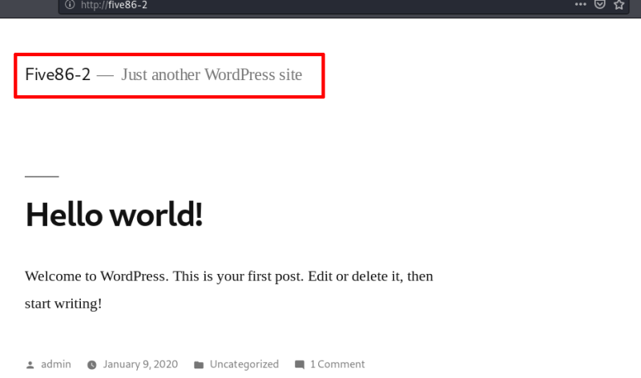

3.1 Port 80
1.2 Port 80
Let's see what there is on port 80.
a) Add the target machine to “/etc/hosts” on your Kali Machine.
Add this line:
192.168.12.36 five86-2
and save it.
b) Open a browser and go to http://five86-2
Output:

We see it's a Wordpress Site.
 Index
Index